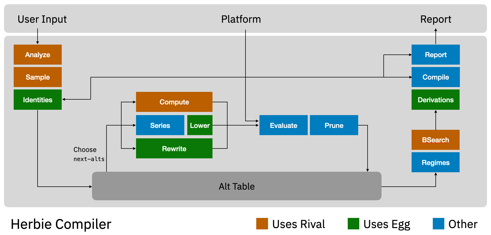

The Herbie developers are excited to announce
Herbie 2.2! This release focuses extensible compilation targets
using platforms.
What is Herbie? Herbie compiles mathematical expressions
to fast and accurate floating point programs, avoiding the bugs,
errors, and surprises of floating point arithmetic.
Visit the main page to learn more.
Herbie 2.2's platforms allow you to
define custom compilation targets, including novel hardware
(CPUs, GPUs, FPGAs, TPUs), programming languages (Julia, Matlab,
Fortran), or software libraries (Numpy, Eigen, cuBLAS).
Platforms can define new number formats, new floating-point
operations on those formats, and new cost models for those
operations. Herbie will automatically optimize its results for
your platform.
Last year, Herbie 2.1
included the beginnings of platforms, Herbie's API for
multiple backends. We've simplified and improved this API, and are
now ready to release it.
In short, platforms allow you define the functions Herbie is
allowed to use when compiling floating-point programs. A platform
can expose Python's fsum, Julia's cosd, or
AVX's rcpps to Herbie, which can then use those
functions to produce even faster and more accurate output.
Our recent publications demonstrate
dramatic accuracy and performance improvements using platforms.
Platforms are a large change, and we invite users to try it out.
The platforms documentation explains
how to select different built-in platforms, or even how to write
your own.
Besides the new feature, platforms allow us to deprecate a
variety of now-superseded features:
The default platform now uses a realistic, auto-tuned cost
model which should lead to faster code in practice.
The Herbie 2.0 and 2.1 cost models are replaced by
the herbie20 platform.
The --no-pareto flag is replaced by
the herbie10 platform.
Plugins are now replaced by ordinary Racket libraries imported
directly by plugins.
Preprocessing is now replaced by standard platform-provided
functions such
as fmin, fmax, fabs,
and copysign.
Restructuring the Main Loop

The Herbie main loop is dramatically simplified, with no
separate simplify or localize phase and a new compute phase that
aid with hard-to-compute constants.
We've overhauled the Herbie main loop, which is the high-level
algorithm that invokes different Herbie sub-systems to generate and
filter different candidate programs. This overhaul both introduces
new systems, which should make Herbie more capable, and reduce
duplicative work, dramatically speeding up Herbie. Specifically:
A new compute phase was added, which replaces variable-free
subexpressions with constants. The constants are computed using
high-precision arithmetic and are guaranteed to be exact.
The simplification phase was removed. This phase mostly
duplicated work already done by the rewrite phase, so removing it
had very little impact on performance and accuracy of generated
code, but reduced Herbie runtime significantly.
The localize phase was also removed. This phase existed to
reduce duplicate work in other phases; batches deduplicate the
work automatically so localize is no longer needed. Removing this
phase also significantly sped up Herbie.
Minor phases like initial and final simplify were removed as
well. Most importantly, this allowed replacing the existing,
complex "accelerator" API (never fully released) and replace it
with the much simpler "platform" API.
Herbie more correctly tracks Taylor approximations inside
Herbie, and will now avoid making "approximations to
approximations" leading to runaway error in rare cases.
An example of a batch, containing two expressions (and their
subexpressions): (x + 1)2 - 1
and (-(x + 1))2 - 1. Shared
subexpressions are only represented once in the batch, and are
only processed once by Herbie.
We have also changed Herbie's main data structure for
representing programs. Until now, Herbie represented programs via
their abstract syntax tree. While simple and effective, this
representation lead to processing identical subexpressions
repeatedly. This was especially problematic for larger programs,
which can sometimes have the same subexpression appear exponentially
many times.
The batch data structure instead uses a flat array with
back-references to represent programs, which means that duplicate
subexpressions appear and are processed just once. This lead to
significant speedups throughout Herbie:
Batches automatically deduplicates identical candidate
programs, which occur when multiple Herbie phases produce the
same output. There were a lot more of these than we thought; in
some cases as much as 25× deduplication occurs.
The series phase, now uses batches internally, allowing Herbie
to consider many more series expansions.
Herbie's FFI layer for interacting with
the egg library now
leverages batches to reduce time spent copying data in and out of
egg.
In some cases, one batch is shared across multiple phases
(like evaluation and pruning), reducing duplication even
further.
The derivations phase was dramatically sped up by caching
proof objects across multiple candidate programs. Additionally,
a debugging pass called "soundiness" was removed entirely, since
the problems it was built to debug no longer occur. Thanks to
both changes, derivations take almost no time at all any
more.
Sister Projects
The Odyssey
numerics workbench is releasing version 1.2 today, featuring
a new "local error" component and various design tweaks and
improvements. Odyssey can be tried from
its online
demo or installed locally from
the VS
Code Marketplace.
The Rival
real-arithmetic package is releasing version 2.2 today,
including various tweaks, optimizations, and improvements. Most
significantly, a new "hints" feature significantly speeds up
sampling expressions that
use fmin, fmax, and if.
Other improvements
Herbie now offers a basic HTTP
API, including both synchronous and asynchronous jobs and
access to various internal Herbie features. This HTTP API is a
work in progress and is primarily built to support Odyssey.
However, our work on the API has also enabled the
standard Herbie web interface to
support threads, which should make
Herbie faster in a lot of common use cases.
Small quality-of-life changes have been made to the Herbie
reports, including hiding duplicate alternatives, updating
various dependencies, and generating the reports more
quickly.
Optional, off-by-default support for
the egglog
rewriting engine has been added. We are excited about growth and
competition among rewrite engines and hope to continue driving
forward this research area.
Fixing a variety of small bugs, such as nondeterminism due to
an incorrect type signature for fma and new rewrite
rules to unlock more accurate results.
Many general-purpose cleanups, including removing a lot of
now-unnecessary nightly infrastructure, adoption of a new
formatting guideline, reorganization of the source code, and new
debug infrastructure.
Try it out!
We want Herbie to be more useful to scientists, engineers, and
programmers around the world. We've got a lot of features we're
excited to work on in the coming months. Please
report bugs
or contribute.